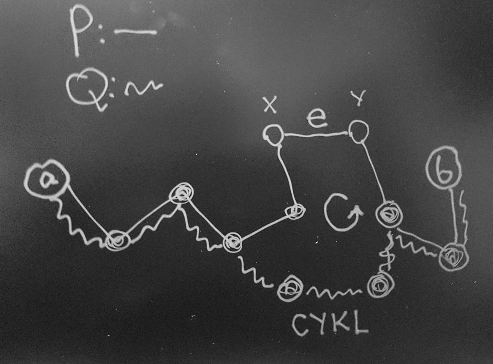

2020-03-18
Graf bez cykli nazywamy acyklicznym.
Drzewem nazywamy dowolny graf acykliczny.
Drzewem nazywamy spójny acykliczny graf.
Liściem w drzewie nazywamy wierzchołek o stopniu \(1\).
Każdy las jest sumą rozłącznych drzew.
przykłady
Każde skończone drzewo \(T(V,E)\) dla \(|V|\ge 2\) ma co najmniej dwa liście. Po usunięciu liścia z drzewa z \(n\) wierzchołkami otrzymujemy o \(n-1\) wierzchołkach.
\(a,b \in V \setminus \{x\}\)
to droga od \(a\) do \(b\) nie może przechodzić przez \(x\).
Krawędź \(e \in E\) w grafie spójnym \(G=(V,E)\) nazywamy mostem jeśli graf \(G-e = (V,E\setminus\{e\})\) nie jest spójny. Na poniższym rysunku krawędź będąca mostem ma czerwony kolor.
most
Zauważ, że po usunięciu mostu z grafu z tego rysunku graf rozpada się na dwie składowe spójne. Tak jest zawsze - jest to jedno z zadań które pojawi się na liście.
Jeśli krawędź należy do cyklu to nie jest mostem.
Niech \(G=(V,E)\) będzie grafem prostym przy czym \(|V|=n\ge 1\).
Na Twierdzenie to można spojrzeć tak: mając trzy własności \(\big\{\)spójność, acykliczność, posiadanie \(n-1\) wierzchołków \(\big\}\) każda dwójka z nich implikuje trzecią.
\(1.\implies2.\)
(indukcja po \(n\) \(|V(G)|\))
Dla \(n=1\) jest OK.
Zakładamy, że dla grafów \(G\) takich, że \(|V(G)| = n\) implikacja ta jest prawdziwa. Bierzemy graf \(H\) taki, że \(|H| = n+1\). Na mocy Lematu A ma on liście. Niech \(a\) będzie takim liściem. Rozważamy graf \(H\) - \(\{a\}\). […]
\(2.\implies3.\)
Załóżmy, że \(G\) jest spójny, ma \(n-1\) krawędzi ale ma cykl. Weźmy krawędź \(e\) z tego cyklu. Na mocy Lematu B krawędź \(e\) nie jest mostem. Zatem graf \(G - e\) jest spójny, ale ma on \(n-2\) krawędzi. A to jest sprzeczne z ostatnim twierdzeniem z drugiego wykładu.
\(3.\implies1\).
Załóżmy, że \(G\) rozkłada się na składowe spójne \(V_1,\dots,V_k\). Niech \(n_1 = |V_1|,\dots,n_k=|V_k|\). Każda ze składowych jest spójna i nie ma cykli. Wiemy, już że \(1.\implies2.\). Zatem \(V_i\) ma \(n_i-1\) krawędzi. Więc graf \(G\) ma \((n_1-1) + \dots + (n_k-1)\) krawędzi.
Ale \((n_1-1) + \dots + (n_k-1) = (n_1 + \dots + n_k) -k = n-k\)
więc \(k=1\).
Komentarz: wiemy, że jeśli graf spójny ma \(n\) wierzchołków, to musi mieć co najmniej \(n-1\) wierzchołków; zatem drzewo to graf spójny o minimalnej liczbie krawędzi.
Niech \(G=(V,E)\) będzie prostym grafem o \(n\ge1\) wierzchołkach.
\(\circlearrowleft\): 1. \(G\) jest drzewem 2. dla dowolnej pary wierzchołków \(a,b \in V\) istnieje dokładnie jedna droga od \(a\) do \(b\)
\(1.\implies2.\):
Załóżmy, że mamy dwie różne drogi \(P\) i \(Q\) od \(a\) do \(b\).
Niech krawędź \(e\) będzie na drodze \(P\) ale nie na \(Q\).
Niech \(e = \{x,y\}\).
Zbuduj drogę od \(x\) do \(y\); po dodaniu \(e\) do tej drogi otrzymamy cykl: 
\(2.\implies1.\) - trywialne.
Graf \(T = (V, E_T)\) jest drzewem rozpinającym grafu \(G = (V,E)\) jeśli \(T\) jest drzewem i \(E_T \subseteq E\).
Na poniższym rysunku jest graf i jedno z jego drzew rozpinających (czarne kreski):
spanning tree
Każdy spójny graf ma drzew rozpinające.
Niech \((V,E)\) będzie grafem spójnym. Niech \(\mathcal{E}\) będzie rodziną wszystkich podzbiorów \(H \subseteq E\) takich, że \((V,H)\) jest spójny.
Niech \(T\) będzie \(\subseteq\)-minimalnym elementem \(\mathcal{H}\). Wtedy \((V,T)\) jest drzewem.
Usuwajmy kolejno z \(E\) krawędzie z cykli tak długo jak jest jakiś cykl. Na mocy Lematu B nie psujemy spójności. A uzyskamy acykliczność. Otrzymamy więc w ten sposób drzewo.
Na liście zadań będzie do przemyślenia jeszcze inny sposób budowania drzewa rozpinającego.